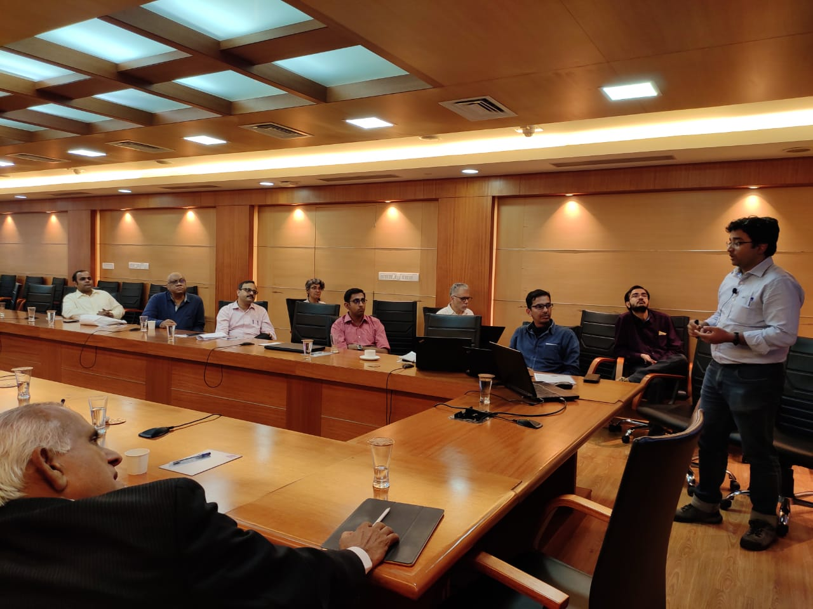
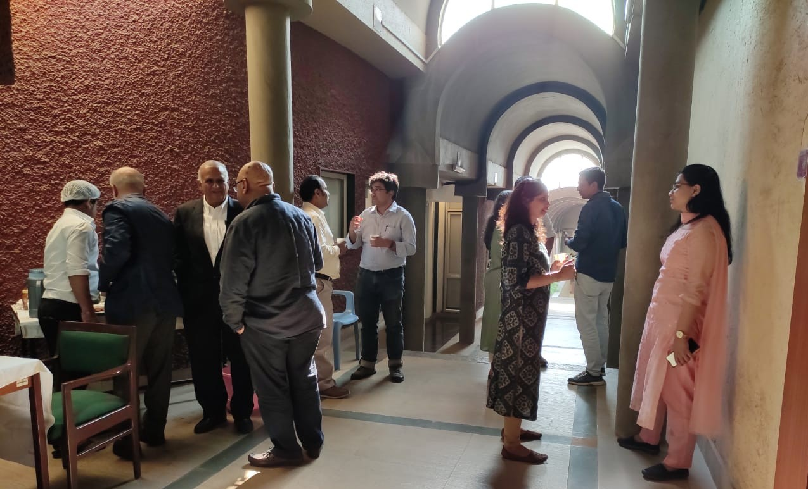
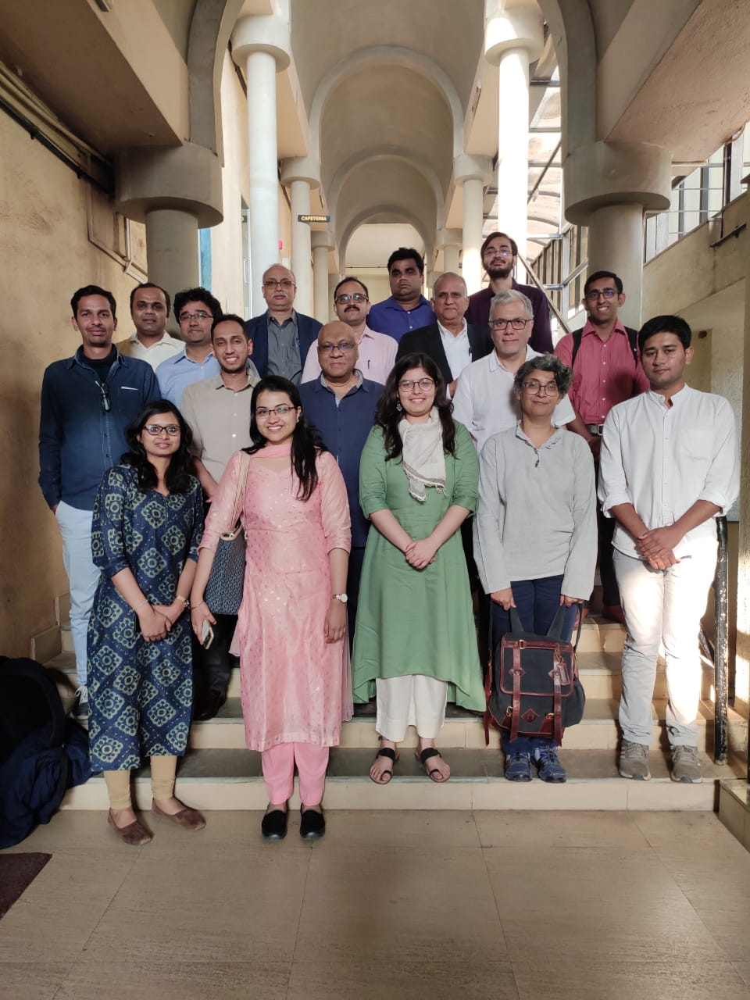

8th February, 2020
Venue: Conference room, IGIDR, Mumbai
The FRG-IIM Udaipur-IGIDR field workshop on market microstructure brings together researchers to present their research to an interested group of peers and experts to elicit views and comments on their work. What differen- tiates the field workshop from the typical research conference is the presence of the industry and policy makers who help to place technical research work into the perspective of how it can help inform the design of markets and market institutions.
The workshop has six research presentations on questions ranging from mechanisms of market manipulation in crypto-currency markets to what type of traders dominate the price discovery process in the presence of algorithmic and high-frequency trading.
The tentative agenda for the workshop follows:
| 08:30 - 09:00 | Registration, Coffee and Tea |
| 08:55 - 09:00 | Welcome address |
| 09:00 - 10:00 | A new wolf in town? Pump-and-dump manipulation in cryptocurrency markets [paper] [presentation] Anirudh Dhawan and Talis J. Putnins, University of Technology, Sydney |
| 10:00 - 11:00 | A Data Paradigm for Robustification of Parametric Estimation: Realized Volatilities and Kernels from Non-Synchronous NASDAQ Quotes [paper] Ranjan R. Chakravarty and Sudhanshu Pani, School of Business Management, NMIMS University, Bombay |
| 11:00 - 12:00 | Order flow toxicity under the microscope [paper] [presentation] David Abad, University of Alicante, Magdalena Massot and Roberto Pascual, University of Balearic Islands, Samarpan Nawn, IIM Udaipur and Jose Yague, University of Murcia. |
| 12:00 - 13:30 | Lunch |
| 13:30 - 14:30 | Round the clock international price discovery of gold Balakrishnan Illango, Refinitiv, Sanjay Sehgal and Neharika Sobti, University of Delhi Discussant: Manish Singh, IIT Delhi |
| 14:30 - 15:30 | Information flow between spot and futures market – the role of algorithmic traders [paper] [presentation] Anirban Banerjee, IIM Kozhikode and Ashok Banerjee, IIM Kolkata Discussant: Manish Singh, IIT Delhi [presentation] |
| 15:30 - 16:30 | Impact of price path on disposition bias Avijit Bansal and Joshy Jacob, IIM Ahmedabad |
| 16:30 - 16:45 | Summing up |


